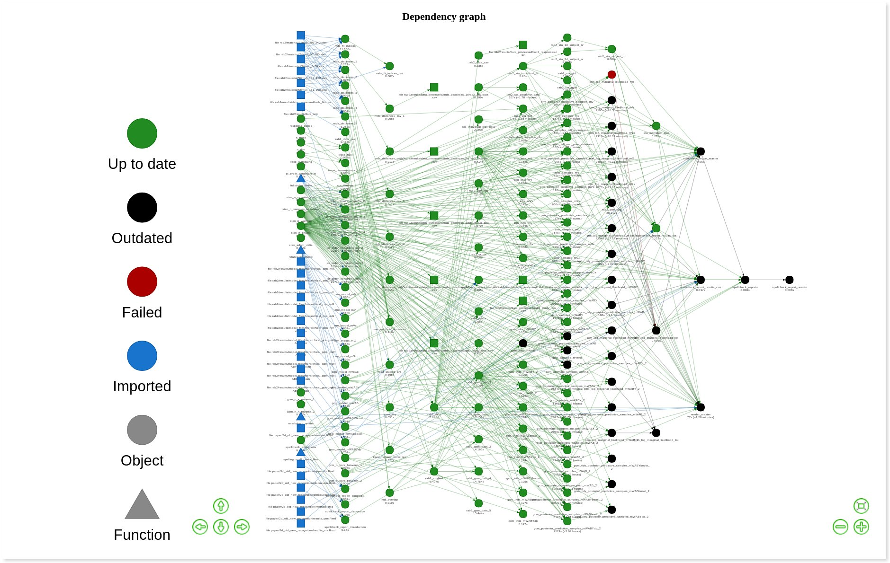

I’ve used a lot of packages in 2019 and many have brought great joy to my R experience. Thank you to everyone who has created, maintained or contributed to a package this year.
Some particular packages of note for me have been:
↔︎️ {arsenal} by Ethan Heinzen, Jason Sinnwell, Elizabeth Atkinson, Tina Gunderson and Gregory Dougherty
Click the package name to jump to that section.
Packages of note
{usethis}
The format and content of R packages is objectively odd. What files are necessary? What structure should it have? The {usethis} package from RStudio’s Hadley Wickham and Jenny Bryan makes it far easier for newcomers and experienced useRs alike.
In fact, you can make a minimal package in two lines:
create_package() to create the necessary package structure
use_r() to create in the right place an R script for your functions
But there’s way more functions to help you set up your package. To name a few more that I use regularly:
use_vignette() and use_readme_md() for more documentation
use_testthat() and use_test() for setting up tests
use_package() to add packages to the Imports section of the DESCRIPTION file
use_data() and use_data_raw() to add data sets to the package and the code used to create them
use_*_license() to add a license
There are also other flavours of function like git_*() and pr_*() to work with version control and proj_*() for working with RStudio Projects.
I focused this year on making different types of package. {usethis} made it much easier to develop:
{blogsnip} to insert blog-related code snippets via an RStudio addin (there’s even a use_addin() function to create the all-important inst/rstudio/addins.dcf file)
Your analysis has got 12 input data files. They pass through 15 functions There are some computationally-intensive, long-running processes. Plots and tables are produced and R Markdown files are rendered. How do you keep on top of this? Is it enough to have a set of numbered script files (01_read.R, etc) or a single script file that sources the rest? What if something changes? Do you have to re-run everything from scratch?
You need a workflow manager. Save yourself some hassle and use Will Landau‘s {drake} package, backed by rOpenSci’s peer review process. {drake} ’remembers’ all the dependencies between files and only re-runs what needs to be re-run if any errors are found or changes are made. It also provides visualisations of your workflow and allows for high-performance computing.
In short, you:
Supply the steps of your analysis as functions to drake_plan(), which generates a data frame of commands (functions) to operate over a set of targets (objects)
Run make() on your plan to run the steps and generate the outputs
If required, make changes anywhere in your workflow and re-make() the plan – {drake} will only re-run things that are dependent on what you changed
Below is an extreme example from a happy customer. Each point on the graph is an object or function; black ones are out of date and will be updated when make() is next run.

‘I’m so glad {drake} is tracking those dependencies between #rstats computations for me’
It’s hard to do {drake} justice in just a few paragraphs, but luckily it’s one of the best-documented packages out there. Take a look at:
You can choose what gets returned from your iterations by selecting the appropriate map_*() variant: map() for a list, map_df() for a data frame, map_chr() for a character vector and so on. Here’s a trivial example that counts the number of Street Fighter characters from selected continents. Here’s a list:
# Create the example liststreet_fighter <-list(china ="Chun Li", japan =c("Ryu", "E Honda"),usa =c("Ken", "Guile", "Balrog"), `???`="M Bison")street_fighter # take a look at the list
Now to map the length() function to each element of the list and return a named integer vector.
library(purrr) # load the package# Get the length of each list elementpurrr::map_int( street_fighter, # list length # function)
china japan usa ???
1 2 3 1
But what if you want to iterate over two or more elements? You can use map2() or pmap(). And what if you want to get the side effects? walk() and pwalk().
{purrr} is also great for working with data frames with columns that contain lists (listcols), like the starwars data from the {dplyr} package. Let’s use the length() function again, but in the context of a listcol, to get the characters in the most films.
# Load packagessuppressPackageStartupMessages(library(dplyr))library(purrr)# map() a listcol within a mutate() callstarwars %>%mutate(films_count =map_int(films, length)) %>%select(name, films, films_count) %>%arrange(desc(films_count)) %>%head()
Why not just write a loop or use the *apply functions? Jenny Bryan has a good {purrr} tutorial that explains why you might consider either choice. Basically, do what you feel; I like the syntax consistency and the ability to predict what function I need based on its name.
Check out the excellent {purrr} cheatsheet for some prompts and excellent visual guidance.
Honourable mentions
{blogdown}
This blog, and I’m sure many others, wouldn’t exist without {blogdown} by Yihui Xie. {blogdown} lets you write and render R Markdown files into blog posts via static site generators like Hugo. This is brilliant if you’re trying to get R output into a blog post with minimal fuss. The {blogdown} book by Yihui, Amber Thomas, Alison Presmanes Hill is particularly helpful.
Web scraping is ethically dubious if you fail to respect the terms of the sites you’re visiting. Dmytro Perepolkin has made it easy to be a good citizen of the internet with the {polite} package, which has just hit version 1.0.0 and is on CRAN (congratulations!). First you introduce yourself to the site with a bow() and collect any information about limits and no-go pages from the robots.txt file, then you can modify search paths with a nod() and collect information from them with a scrape(). Very responsible.
{arsenal}
I’ve been using the handy2 {arsenal} package to compare data frames as part of a quality assurance process. First, you supply two data frames to comparedf() to create a ‘compare’ object. Run diffs() on that object to create a new data frame where each row is a mismatch, given a tolerance, with columns for the location and values that are causing problems. We managed to quality assure nearly a million values with this method in next to no time. Check out their vignette on how to do this.